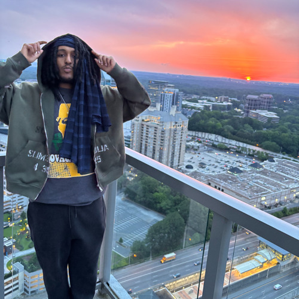
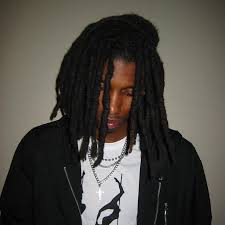
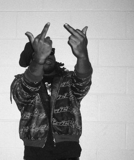
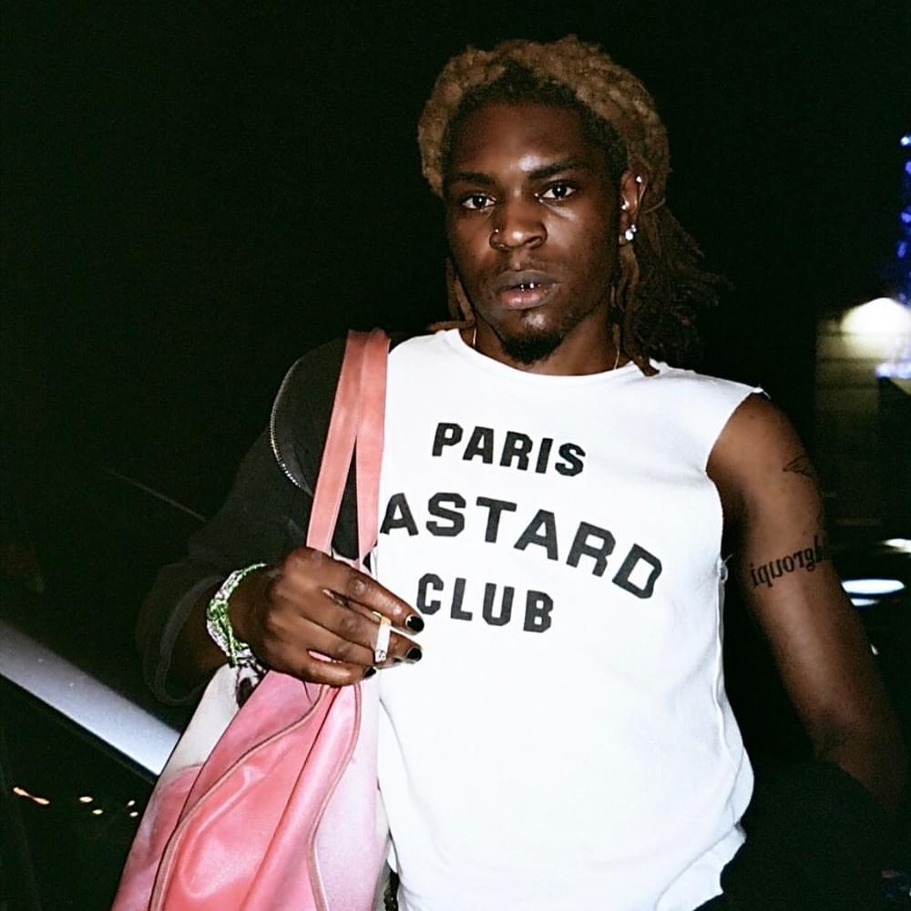
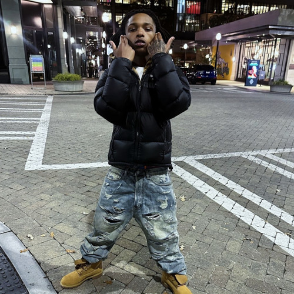

Voices shaping the underground.

Hip-hop • Raw lyricism • City sound
Sir Untre is an independent hip-hop artist recognized for his gritty delivery, confident lyricism, and street-influenced storytelling. His music blends hard-hitting trap production with sharp, punchline-driven verses that emphasize resilience, hustle, and self-made success. Sir Untre’s style often reflects an unapologetic attitude and a focus on authenticity, resonating with listeners who gravitate toward raw, unfiltered rap narratives. Building his presence primarily through digital platforms and independent releases, he has cultivated a growing fanbase that appreciates his commanding voice, high-energy performances, and commitment to carving out his own lane outside the mainstream industry.

Experimental • Dark • Atmospheric
Cxto is an emerging independent hip-hop artist known for blending introspective lyricism with atmospheric, modern trap production. His music often explores themes of ambition, personal struggle, emotional vulnerability, and the pressures of navigating success while staying authentic. With a style that balances melodic flows and sharp, reflective bars, Cxto has built a grassroots following online, particularly among listeners drawn to moody, late-night rap sounds. Rather than relying on major-label promotion, he has grown through streaming platforms and social media, where his raw delivery and relatable storytelling resonate with fans seeking a more personal, underground voice in contemporary rap.
Alternative • Story-driven • Visual
Sir Untre is an independent hip-hop artist recognized for his gritty delivery, confident lyricism, and street-influenced storytelling. His music blends hard-hitting trap production with sharp, punchline-driven verses that emphasize resilience, hustle, and self-made success. Sir Untre’s style often reflects an unapologetic attitude and a focus on authenticity, resonating with listeners who gravitate toward raw, unfiltered rap narratives. Building his presence primarily through digital platforms and independent releases, he has cultivated a growing fanbase that appreciates his commanding voice, high-energy performances, and commitment to carving out his own lane outside the mainstream industry.

Trap • Ambition • High energy
Billi0n is an independent hip-hop artist recognized for his confident delivery, modern trap-influenced production, and themes centered around ambition, wealth, and perseverance. His sound often combines melodic hooks with assertive verses, creating tracks that balance catchiness with lyrical grit. Drawing from contemporary rap trends while maintaining a distinct underground edge, Billi0n has cultivated a growing presence on digital streaming platforms, where his motivational tone and high-energy style resonate with listeners who connect with music about self-made success and relentless drive.

Melodic • Emotional • Atmospheric
Diorvsyou is an independent hip-hop artist known for a melodic, emotionally driven style that blends modern trap production with introspective themes. His music often explores relationships, personal growth, heartbreak, and the tension between vulnerability and confidence, delivered through smooth flows and atmospheric beats. With a sound that leans into moody textures and catchy hooks, Diorvsyou has built a grassroots following online, where listeners connect with his relatable storytelling and polished yet raw delivery. Operating outside the mainstream industry, he continues to develop a distinct identity within the new wave of internet-born rap artists.

Street • Raw • Introspective
Babystaydown is an independent hip-hop artist known for a raw, street-rooted sound paired with introspective undertones. His music often blends hard-hitting trap beats with gritty storytelling about loyalty, survival, ambition, and the realities of coming up from difficult circumstances. With a delivery that shifts between aggressive energy and reflective calm, Babystaydown creates tracks that feel both confrontational and deeply personal. Building his presence primarily through online releases and word-of-mouth support, he has developed a growing underground fanbase drawn to his authenticity, emotional honesty, and uncompromising portrayal of hustle-driven life.